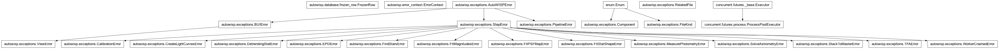

autowisp.error_context module
Class Inheritance Diagram

Ambient error context and the capture boundaries that stamp it.
AutoWISPError carries fields for the
pipeline run, the raising worker, the step, and the related files. This
module fills those fields in without burdening every raise site: a call
deep inside a step can raise SolveAstrometryError("no WCS solution")
and have the step name, the pipeline-run snapshot, and the files it was
working on attached automatically by the time the exception surfaces.
The ambient context is a single immutable ErrorContext bundle
held in one contextvars.ContextVar. A single var holding a frozen
object keeps related state cohesive (one get_error_context() returns
a consistent snapshot) while preserving exactly the contextvars
set/reset semantics – and thread/asyncio isolation – the scoping relies
on.
- class autowisp.error_context.ErrorContext(pipeline_run: FrozenRow | None = None, step_name: str | None = None, related_files: tuple = (), in_worker: bool = False, config: dict | None = None)[source]
Bases:
objectImmutable bundle of the ambient context attached to errors.
Held in a single
_contextContextVar so any code on the call stack can read a consistent snapshot without it being threaded through every call. Frozen so that establishing or scoping context replaces the ContextVar value (preserving its set/reset semantics and thread/async isolation) rather than mutating shared state.- pipeline_run
Snapshot of the
PipelineRunrow, orNonefor runs with no DB row.- Type:
FrozenRow or None
The
RelatedFileentries in scope.- Type:
- in_worker
True inside a multiprocessing worker process; used by the nested-worker guard.
- Type:
- config
Snapshot of the per-process configuration (the resolved step parameters plus the runtime inputs threaded in), recorded onto errors so a crash report shows the exact settings the failing step ran with – the resolved config is a runtime derivation and lives nowhere else.
Noneoutside a configured process.- Type:
dict or None
- classmethod from_config(config)[source]
Rebuild context inside a freshly-started process from config.
A worker has no ORM instance, so the pipeline-run snapshot is built from the primitives threaded through the per-process config dict rather than via
snapshot_row. Also picks up the step name already present inconfig, and infersin_workerfromparent_pid– the key the parent threads in for workers (and which is absent in the main process; seeget_log_outerr_filenames).- Parameters:
config (dict) – The per-process config dict, carrying the pipeline-run keys,
processing_step, and (for workers)parent_pidthreaded through by the parent.- Returns:
- The rebuilt context.
pipeline_runis Nonewhen the keys are absent (e.g. a unit test calling a step directly).
- The rebuilt context.
- Return type:
- class autowisp.error_context._WorkerEntry(func, component: Component, inflight=None, related_files=None)[source]
Bases:
objectPicklable wrapper that stamps errors leaving a Pool worker.
Scheme A (
Pool+map/imap): on the way out an error is stamped withsubprocess_id+ ambient context (see_stamp_worker_error()) and re-raised, letting the Pool pickle it back to the parent.Around the wrapped call it does two things with the item:
In-flight tracking. The item is recorded in the shared in-flight map (
{pid: item}) and cleared on return. The executor never records which worker is running which item – workers self-pull, the parent only hears back on completion, and a broken pool collapses every pending future to the sameBrokenProcessPool– so this map is the only place the culprit input of a silent death can be recovered from. A hardos._exit(segfault/OOM) skips thefinally, leaving the culprit behind, which is exactly the case we need it for.Related-file context. The item is scoped as the ambient
related_files(viarelated_files, the call site’s classifier), so any error the callable raises – e.g. a config-vs-file-content mismatch deep inside the step – carries the file it was about, which then FK-resolves / renders in the error record.
Both ride on the wrapper: the executor already pickles
_WorkerEntryto each worker, and aManager().dict()proxy pickles/reconnects across that boundary, so no separate plumbing is needed.This is a class, not a closure, because
Pool.mappickles the mapped callable to send it to the worker (under bothforkandspawn); a closure is not picklable, whereas an instance holding a picklablefunc(e.g. afunctools.partialof a module-level function), an enumcomponent, and a picklable proxy is.- func
The wrapped per-item worker callable.
- Type:
Callable
- inflight
Shared
{pid: item}map, orNoneto disable tracking (non-run_poolcallers).- Type:
DictProxy or None
Classifier turning the item into related file(s); see
_resolve_related_files().- Type:
FileKind, Callable, or None
- autowisp.error_context._exit_signal_entry(code)[source]
Decode one process exit code into a portable death descriptor.
None(still running) and0(clean) yieldNone. The meaning of a non-zero code is OS-specific, so decode accordingly:POSIX: a negative code is a kill by signal
-code(SIGKILL-> OOM / macOS jetsam,SIGSEGV-> native crash), whose name is added; a positive code is a plainexit(code).Windows: there are no POSIX signals – the code is a process / NTSTATUS exit status (e.g.
0xC0000005= access violation), so its conventional hex form is added for abnormal values rather than being (mis)read as a signal.
Never raises.
Carry files recorded on
originalover to the exception wrapping it.Scopes record onto the exception that passed through them, but the capture layer surfaces a different object (the
StepErrorsubclass wrapping a bareValueError), which would otherwise start empty.- Parameters:
wrapper_exc (AutoWISPError) – The wrapping exception.
original (BaseException) – The exception it wraps.
- Returns:
None
- autowisp.error_context._pool_exit_signals(executor, wait_seconds=5.0)[source]
Decode a broken pool’s worker exit codes (best-effort, private API).
ProcessPoolExecutorhides a worker death behindBrokenProcessPooland clears its process table on shutdown, so this must be read at the moment of the break (seerun_pool()). Reaches into the executor’s private_processes; returns[]if the attribute is absent or anything goes wrong.- Parameters:
executor (ProcessPoolExecutor) – The broken executor.
wait_seconds (float) – How long to wait for the exit codes to be collected before giving up on decoding them. Only ever paid on the crash path, and only until the reaper wins.
- Returns:
Decoded abnormal worker exits.
- Return type:
Attach
related_filestoexcso they outlive their scope.A scope’s ContextVar is reset while the exception is still propagating – before any enclosing
exceptruns – so by the time_stamp()sees the error at a capture boundary the ambient context no longer holds the files. Recording them on the exception itself is what survives the unwind.Each scope contributes only the files it added, so nesting accumulates innermost-first: the item that actually failed, then whatever enclosed it.
- Parameters:
exc (BaseException) – The exception leaving the scope.
related_files (tuple) – What this scope contributed.
- Returns:
None
Build the
RelatedFiles for a work item, best-effort.related_filesis the call site’s classifier for the items it maps over – either aFileKind(the item is a path) or a callableitem -> RelatedFile | Iterable[RelatedFile] | None(for items that are not a bare path, e.g. an image set). Never raises: a classifier that does not fit the item simply yields no related files, so error handling is never itself a source of errors.
- autowisp.error_context._signal_name(signum)[source]
POSIX signal name for a number (e.g. 9 ->
"SIGKILL"), or None.
- autowisp.error_context._stamp(exc: AutoWISPError) None[source]
Fill any unset context fields on
excfrom the ambient context.Already-populated fields are left untouched. This is the one place that writes
step_name/related_files/pipeline_run/crashedafter construction (they are mutable instance attributes), and stamps the process config intodetailsso it travels back to the parent with a worker error.- Parameters:
exc (AutoWISPError) – The exception to stamp in place.
- Returns:
None
- autowisp.error_context._stamp_worker_error(exc: Exception, component: Component) AutoWISPError[source]
Turn an error raised in a worker into a stamped, picklable one.
Shared by
worker_entry()(Scheme A:Pool, which re-raises) andcapture_for_queue()(Scheme B:Process+Queue, which puts the returned object on a queue). AnAutoWISPErroris stamped in place; any other exception is wrapped via_wrap()into the step’s concreteStepErrorsubclass (so a worker’s bareValueErrorsurfaces as e.g.FindStarsError), not aWorkerCrashedError– that type is reserved for a worker that dies without producing an error object at all (synthesised by the parent).The worker traceback is captured into
details["original_traceback"]because it is the only durable record that crosses back: Scheme A’sRemoteTracebacklives only on the live re-raised object, Scheme B has none, and neither transport pickles__cause__.- Parameters:
- Returns:
The stamped exception, safe to pickle.
- Return type:
- autowisp.error_context._stream_as_completed(executor, wrapped, items)[source]
Yield worker results as they finish (unordered streaming).
The
ProcessPoolExecutoranalogue ofPool.imap_unordered: submit every item, then surface results viaas_completedso a consumer can process them lazily.future.result()re-raises a worker error (a stampedAutoWISPError) or, on a worker death, aBrokenProcessPool– both then handled byrun_pool().- Parameters:
executor (ProcessPoolExecutor) – The live executor.
wrapped (Callable) – The
worker_entry()-wrapped worker.items (iterable) – Work items to submit.
- Yields:
The return value of
wrappedfor each item, in completion order.
- autowisp.error_context._worker_crashed(items, exc: Exception, inflight=None, related_files=None, exit_signal=None, num_processes=None) WorkerCrashedError[source]
Synthesise the parent-side error for a worker that died silently.
Used when a worker dies without producing an error object (segfault, OOM-killer,
os._exit), so the parent must describe the failure from what it knows: the step, the in-flight inputs, and the underlying pool error.- Parameters:
items – The work items that were in flight.
exc (Exception) – The error the pool surfaced for the death.
inflight (DictProxy or None) – The shared
{pid: item}in-flight map (see_WorkerEntry). Its values are the items being executed at the moment of death – the culprit plus any innocents the executor force-terminated, a set bounded by the worker count.Noneif tracking was off.related_files (FileKind, Callable, or None) – The call site’s related-file classifier, used to promote the in-flight items to structured
related_fileson the error (so a crash links straight to the offending file, not just adetailsstring).exit_signal (list or None) – Decoded OS-level exit info for the dead worker(s) (see
decode_exit_signals()) – the tell for SIGKILL/OOM vs. a native crash. Recorded when non-empty.num_processes (int or None) – The pool’s worker count, recorded alongside the memory snapshot so
Nworkers vs. total RAM makes an OOM death easy to judge.
- Returns:
Stamped with the ambient context.
- Return type:
- autowisp.error_context._wrap(exc: Exception, component: Component) AutoWISPError[source]
Wrap a non-AutoWISP exception in the right concrete class.
Inside a step it becomes the step’s
StepErrorsubclass (looked up from the ambient step name); in the BUI it becomes aViewError; otherwise aPipelineError. The original is preserved as__cause__by the caller (raise ... from exc).- Parameters:
- Returns:
The wrapping exception (not yet stamped).
- Return type:
- autowisp.error_context.capture_errors(*, component: Component, wrap_unknown=True)[source]
Stamp ambient context onto errors leaving the wrapped callable.
- Parameters:
- Returns:
A decorator for the step/dispatch callable.
- Return type:
Callable
- autowisp.error_context.capture_for_queue(exc: Exception, *, component: Component) AutoWISPError[source]
Stamp a worker error and return it for a result queue (Scheme B).
Sibling of
worker_entry()forProcess+Queueworkers that catch and return their error (toresult_queue.put(...)) rather than re-raising it. Performs the same stamping + traceback capture and returns the picklable exception.- Parameters:
- Returns:
The stamped exception, safe to put on a queue.
- Return type:
- autowisp.error_context.decode_exit_signals(exitcodes)[source]
Decode a collection of process exit codes (best-effort, portable).
Returns one
_exit_signal_entry()per abnormal exit (droppingNone= still running and0= clean), so an empty list means no abnormal termination was observed. Shared by both parallel schemes so a crash report reads the samedetails["exit_signal"]regardless of transport. Never raises.
- autowisp.error_context.error_context(*, step_name=None, related_files: Sequence = (), config=None)[source]
Scope additional context for any error raised inside the block.
Builds a new
ErrorContext(step, files, and config supplied at construction, not by mutating the current one), installs it for the duration of the block, and resets the token on exit.- Parameters:
step_name (str or None) – Override the ambient step name for the duration of the block.
related_files (Sequence[RelatedFile]) – Files appended to the ambient related-files list for the duration of the block.
config (dict or None) – The step’s resolved config to record on errors raised in the block. The managers scope this at each step’s dispatch – uniformly for every step, whether or not it uses a worker pool – so a parent-side error (including a synthesised
WorkerCrashedError) carries the failing step’s config, not the base config the parent bootstrapped with.Nonekeeps whatever is already in scope.
- Yields:
None
- autowisp.error_context.forbid_nested_workers() None[source]
Enforce the no-nested-workers policy (resource control).
Every parallel site is sized by
num_parallel_processes; a worker that spawned its own pool/process would multiply that out toN^2live processes. Called before any worker launch so an accidental nested launch fails loudly instead of silently blowing the limit.- Returns:
None
- autowisp.error_context.get_error_context() ErrorContext[source]
Return the current ambient
ErrorContext.
- autowisp.error_context.in_worker() bool[source]
Whether the current process is a multiprocessing worker.
- autowisp.error_context.reraise_from_worker(exc: AutoWISPError) None[source]
Re-raise in the parent an error pulled off a worker result queue.
Fills the pipeline-run snapshot from the parent’s ambient context if the worker did not already carry one, then raises. The error then flows up to the parent’s
capture_errorsboundary like any other.- Parameters:
exc (AutoWISPError) – The stamped exception from the queue.
- Returns:
None
- autowisp.error_context.run_pool(worker, items, *, config, num_processes, component: Component = Component.STEP, max_tasks_per_child=None, stream_consumer=None, related_files=None)[source]
Map
workeroveritemsin a process pool, stamping errors.Single entry point for the
Pool-style parallel sites. It enforces the no-nested-workers policy, bootstraps each worker withsetup_process_map, wrapsworkerwithworker_entry()so any error is stamped + picklable before it crosses back, and synthesises aWorkerCrashedErrorif a worker dies without surfacing one.Built on
concurrent.futures.ProcessPoolExecutorrather thanmultiprocessing.Poolspecifically so that a worker that dies mid-task (segfault / OOM-killer /os._exit) raisesBrokenProcessPoolinstead of hanging the pipeline forever – the silent-death casePoolcannot report.- Parameters:
worker (Callable) – The per-item callable (already bound, e.g. via
functools.partial); must be picklable.items (iterable) – Work items to map over.
config (dict) – Per-process config passed to
setup_process_map;parent_pidis set here so workers know they are workers.num_processes (int) – Number of worker processes.
component (Component) – Component for wrapping unknown errors.
max_tasks_per_child (int or None) – Recycle each worker after this many tasks (memory control);
Nonekeeps workers for the whole run.stream_consumer (Callable or None) – If given, it is called with an iterator yielding results as they complete (consumed inside the pool block) instead of returning a materialised, ordered result list.
related_files (FileKind, Callable, or None) – Classifier that turns each item into the file it is about (a
FileKindwhen items are paths, else anitem -> RelatedFilecallable), so errors – including a silent worker death – carry the artifact they were processing.Noneattaches nothing.
- Returns:
- The ordered results, or
Nonewhen a stream_consumeris used.
- The ordered results, or
- Return type:
list or None
- autowisp.error_context.set_error_context(ctx: ErrorContext) Token[source]
Install
ctxas the ambient context, returning the reset token.
- autowisp.error_context.set_pipeline_run(run: FrozenRow | None) Token[source]
Replace the bundle with a copy carrying
run, keeping the rest.- Parameters:
run (FrozenRow or None) – The pipeline-run snapshot to attach.
- Returns:
The reset token for the previous value.
- Return type:
- autowisp.error_context.worker_entry(func, component: Component, inflight=None, related_files=None)[source]
Wrap a Pool worker callable so errors come back picklable + stamped.
- Parameters:
func (Callable) – The worker callable to wrap (must itself be picklable, e.g. a module-level function or a
partialof one).component (Component) – Component to assign when wrapping an unknown exception.
inflight (DictProxy or None) – Shared in-flight map (see
_WorkerEntry);Nonedisables tracking.related_files (FileKind, Callable, or None) – Per-item related-file classifier (see
_resolve_related_files()).
- Returns:
A picklable callable suitable to hand to a Pool.
- Return type: